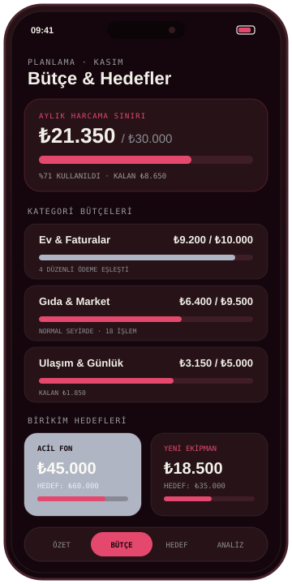
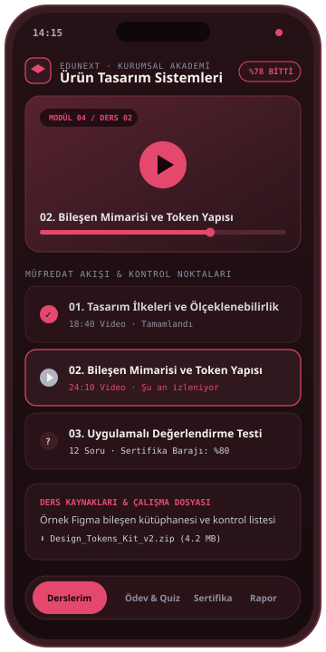
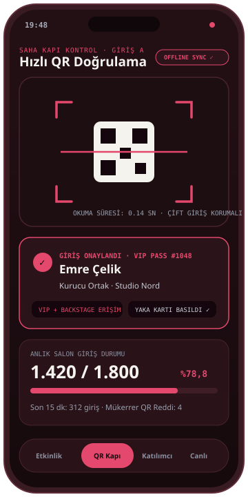
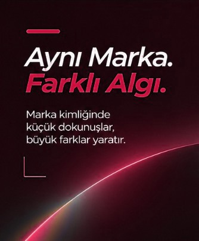
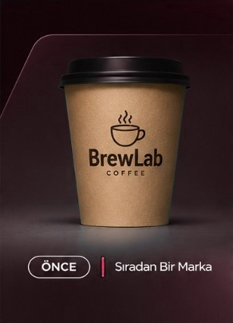
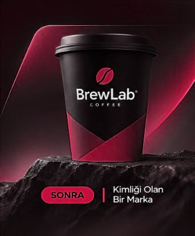

01 · ÖNCE (NATURA)
Standart yüzey
Benzerlerinden ayrışmayan, dijital karşılığı zayıf başlangıç görünümü.

Kendi dijital ürünlerimiz CepLog, KlinikPlus, EduNext ve Eventify’ı geliştirirken edindiğimiz ürün, tasarım ve mühendislik disiplinini markaların dijital deneyimlerine taşıyoruz.
Ürünlerimizi keşfet Tüm işler CEPLOG · KİŞİSEL FİNANS UYGULAMASI
CEPLOG · KİŞİSEL FİNANS UYGULAMASI KLİNİKPLUS · SAĞLIK OPERASYON SİSTEMİ
KLİNİKPLUS · SAĞLIK OPERASYON SİSTEMİSEÇKİ / KENDİ DİJİTAL ÜRÜNLERİMİZ VE MARKA DÖNÜŞÜM ÇALIŞMALARI
Finans, sağlık operasyonu, eğitim ve etkinlik yönetimi alanlarında sıfırdan tasarlayıp geliştirdiğimiz dört dijital ürünümüz.

BÜTÇE · BİRİKİM · NAKİT AKIŞIRANDEVU · HASTA KARTI · PROTOKOL
ONLINE EĞİTİM · DERS YÖNETİMİ · QR SERTİFİKA
ETKİNLİK · BİLET & KAYIT · HIZLI QR GİRİŞSadece logo çizmiyoruz; ambalajdan web ve mobil deneyime kadar markanın algısını değiştiren bütünsel bir karakter oluşturuyoruz.





Bir logo, bir kampanya görseli, bir web sitesi ya da mobil uygulama. Hepsi aynı markanın farklı temas noktaları. Stratejiyi, görsel dili ve yazılım mimarisini birlikte düşünerek bu parçaları çalışan bir bütün hâline getiriyoruz.
Stüdyoyu tanıİhtiyacına göre tek bir başlıkta çalışabilir veya markanın ürün ve iletişim deneyimini uçtan uca birlikte kurabiliriz.
Kimlik · Görsel dil · Dijital uygulama sistemi
↗02İçerik sistemi · Kampanya · Hareketli tasarım
↗03Web deneyimi · Mobil uygulama · Özel yazılım
↗04Problem tanımı · İlk sürüm kapsamı · Yol haritası
↗05Veri minimizasyonu · Rol bazlı erişim · Güvenli varsayılanlar
↗Yeni görsel diller, hareketli kimlikler ve interaktif tipografi deneyleri. Müşteri kısıtları olmadan bir fikrin nereye gidebileceğini araştırdığımız bağımsız tasarım alanı.
Laboratuvara girİlk konuşmadan teslimata kadar hangi kararın ne zaman verileceğini ve tipik zaman çerçevesini birlikte netleştiririz.
İhtiyacı, hedef kitleyi ve mevcut kısıtları anlamak.
Öncelikleri, teslim listesini ve çalışma takvimini yazılı netleştirmek.
Görsel dili, ekran akışlarını ve içerik yerleşimini somutlaştırmak.
Onaylanan tasarımı içerik, kod ve güvenlik kontrolleriyle hayata geçirmek.
Son kontrolleri, dokümantasyonu, hesap devrini ve destek planını tamamlamak.
Arada hesap yöneticisi katmanı olmadan; işi konuşan, tasarlayan ve geliştiren kurucu ekiple doğrudan çalışırsın.
Ürün mimarisi, Flutter ile mobil uygulama geliştirme, web sistemleri ve veri gizliliği odaklı yazılım süreçlerini yönetir.
Marka kimliği, arayüz tasarımı, görsel içerik sistemleri ve dijital kampanya anlatımının tüm temas noktalarında tutarlı çalışmasını sağlar.
Tasarım, teknoloji ve daha iyi proje kararları üzerine kısa, uygulanabilir rehberler.
Teklif almadan önce netleştirmen gereken sorular ve kullanabileceğin başlangıç listesi.
Notu oku MARKA & TASARIM · 4 DK OKUMA02Renk, tipografi ve dilin birlikte çalıştığı bir marka sistemi kurmak.
Notu oku ÜRÜN & TEKNOLOJİ · 5 DK OKUMA03Bir fikri ilk çalışan ürüne dönüştürürken kapsamı nasıl seçersin?
Notu okuİlk görüşmede hedefini, mevcut durumunu ve önceliklerini birlikte tarif edebiliriz. Hazır bir teknik doküman gerekmiyor.
Teslim edilecekler, içerik ihtiyacı, teknik kapsam ve takvim birlikte değerlendirilir. Kapsam netleşmeden sabit bir fiyat veya süre sözü vermiyoruz.
Evet. Marka, içerik ve dijital deneyimi birlikte planlayabilir veya belirli bir ihtiyaç için çalışabiliriz.
Dosya teslimi, kullanım hakları, erişimler ve destek kapsamı teklif aşamasında yazılı olarak netleştirilir.
Fikrin net olabilir. Henüz bir sorudan ibaret de olabilir. İhtiyacı birlikte tarif edebiliriz — genellikle 1 iş günü içinde dönüş yapıyoruz.
Projeni anlat